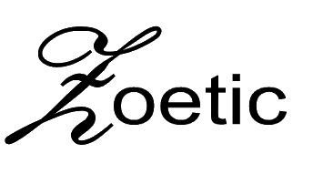
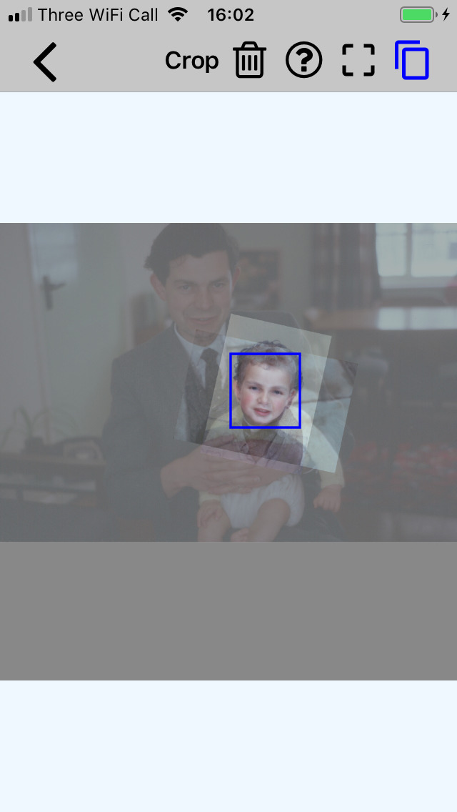
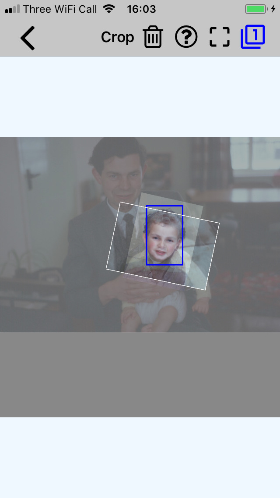
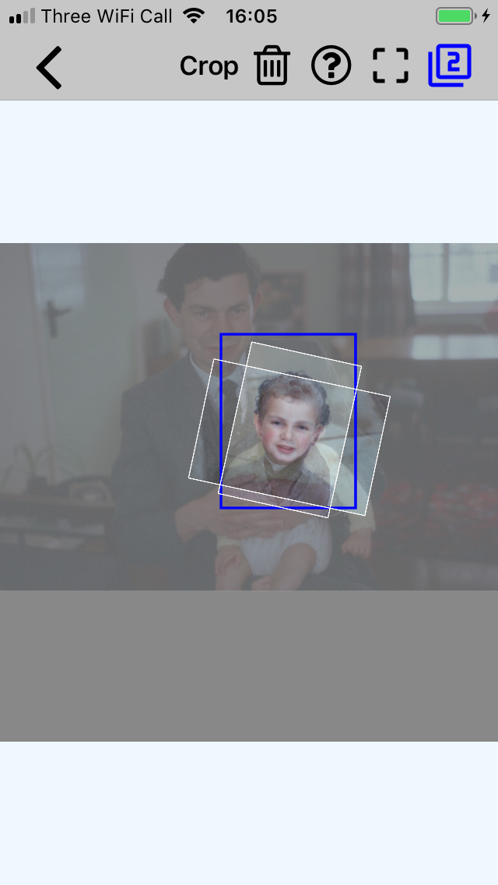
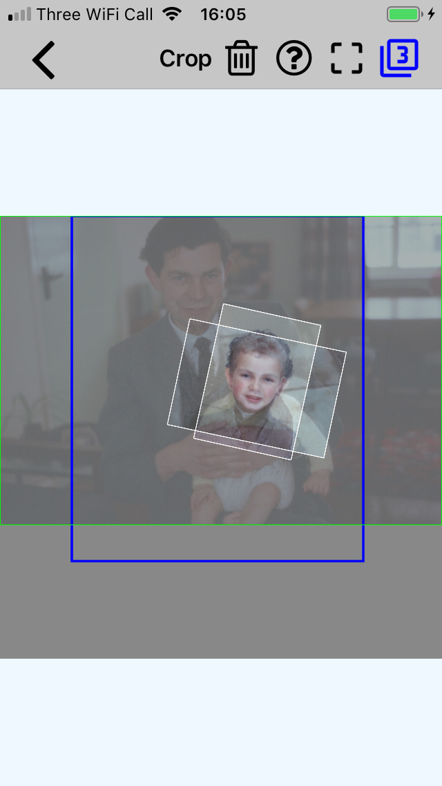
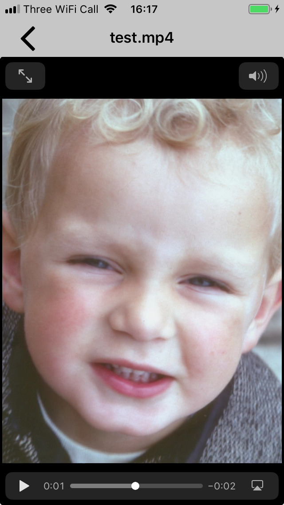
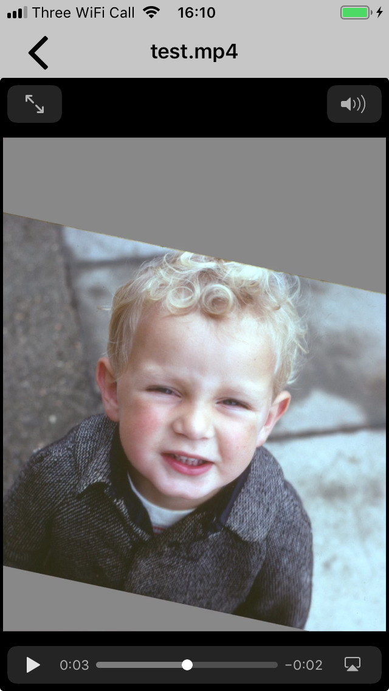

☰ |
 | hidden text |
|---|
The project's "average" image is used in specifying a crop of the images from which to generate the video. The "average" image is made by aligning the images to the project's target image (the first image in the gallery) and then merging the aligned images into a single image. Following the alignment, it is very unlikely that all the image boarders will be aligned. In fact the (virtual) stack of images will probably resemble a very untidy deck of cards. In such cases the edges of the crop may lie outside some image boarders. (Generally, the wider/larger the crop, the greater the number of images that will not fully cover the crop.)
Using the project from "Your first project" the following images show the results of specifying crops of different sizes. The blue rectangle is the crop. The white rectangles are the image boarders of the four images. The green rectangle, only visible in the fourth image, is the target image. The rectangles are shown by tapping the top right square icon. This icon also shows the number of images that are not fully covered by the crop.
   When an image doesn't fully cover the crop, the resulting video will show some "background". The exposed background may be so small that it is deemed not too distracting and hence can be ignored. However, it is always best to aim to set the crop so that it displays the desired area of the images without exposing too much background. When displaying some background can't be avoided, the user can choose (via Settings) the background's colour so that it minimizes the distraction e.g. a green background for a pastoral scene. The default grey background is a reasonable starting point.
The following images are frames from videos generated by this project. The first frame is where the crop has been selected to not expose any background, and the other where a significant amount of background is visible.
 | Back | Contents | Sub-projects |
|---|